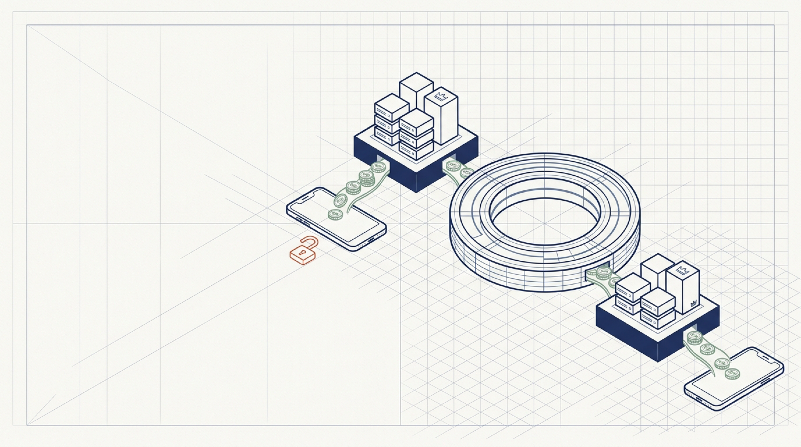

System Design Interview, Vol. 2 / Chapter 12
Digital Wallet
at Scale
How one wallet-to-wallet transfer reshapes the architecture, from sharded Redis to partitioned event sourcing.
- In-memory shards
- Distributed transactions
- Event sourcing
- Local files
- Raft replication
- Partitions + Saga
- Presented by
- Long Dinh
- Built by
- Agent Fabric
→ next slide ← back R replay steps A auto steps F fullscreen N notes ? help
Scope: one operation, five requirements
Balance transfers between two wallets on one payment platform.
- Balance transferBetween two wallets, nothing else
- 1,000,000 TPSOne million transfers per second
- 99.99% reliabilityAt least four nines
- TransactionalAll of a transfer, or none of it
- ReproducibleRebuild any past balance by replay
The rule every design must keep
A→C $1 is two updates, A −$1 and C +$1. They must act as one.
- 1
A −$1first: $1 is in flight - 2
C +$1: the sum is back to $1 - 3From the middle: finish or undo, never stop
1M transfers/s is 2M balance updates/s
Each transfer debits one account and credits another.
- 1One debit + one credit per transfer
- 2Book: 1,000 TPS per node → 2,000 nodes
- 310× per-node TPS → 10× fewer nodes
API: one endpoint
POST /v1/wallet/balance_transfer moves balance from one wallet to another.
| Field | Type | Meaning |
|---|---|---|
| from_account | string | Debit account |
| to_account | string | Credit account |
| amount | string | Not a double: no rounding |
| currency | string | ISO 4217 code |
| transaction_id | uuid | For deduplication |
Response{ "status": "success", "transaction_id": "…" }
- 1Request carries a client-made
transaction_id - 2Response lost: did the money move?
- 3Retry, same id: original result, no second debit
Attempt 1: shard balances across Redis
Accounts spread by hash(account) % N; a stateless wallet service applies each transfer.
- 1Find A and C in the Zookeeper map
- 2
A −$1on Redis 1 succeeds - 3The wallet service crashes
- 4C is never credited: $1 lost
Attempt 2a: two-phase commit (2PC)
Each Redis node becomes a transactional database; the wallet service coordinates.
- 1Write
A −$1,C +$1; both rows lock - 2Phase 1: ask both databases to prepare
- 3Both vote yes (any no → abort all)
- 4Phase 2: commit, then release the locks
Attempt 2b: Try-Confirm/Cancel (TC/C)
Try reserves, Confirm applies, Cancel releases. A starts at $1, C at $0.
- 1Try: hold $1 on A; C gets $1 pending
- 2Confirm: apply the hold and the pending $1
- 3C says no → Cancel: release A's hold
Attempt 2c: Saga
Steps run in a fixed order; a failure is undone in reverse.
- 1
A −$1, thenC +$1, then success - 2C's database rejects
C +$1 - 3Compensate in reverse: C, then
A +$1 - 4The client receives an error
2PC, TC/C and Saga side by side
All three give transactional guarantees; they differ in where coordination lives.
| 2PC | TC/C | Saga | |
|---|---|---|---|
| Where it lives | Database (needs prepare / XA) | Application logic | Application logic |
| Locks | Held from first write to phase 2 | Only inside each local transaction | Only inside each local transaction |
| Undo | Abort before commit | Release the reservations | Compensate: a new reverse step |
| Order | Prepare all, then commit all | Any order or parallel within a phase | One step after another |
| In-between state | Hidden in the database | Reserved: held / pending, not spendable | Visible: A already debited |
| Coordinator crash | Participants blocked, rows locked | Resume from phase status | Resume from phase status |
| Leans toward | Few participants with XA | Latency-sensitive, many services | Few services, no strict latency |
A balance says what, not why
Auditors ask questions a table of current balances cannot answer.
- Balance at any given time?
- Are past and current balances correct?
- Is the logic correct after a code change?
Command queue: ordered intents, not facts
A command is an intent that may be rejected; commands wait in FIFO order. A starts at $1.
- 1
tx 7f3cvalid:A −$1,C +$1 - 2
tx 91ab: A has $0 → rejected, no event - 3
tx 7f3cagain: already seen, same result
Write path: one command, five steps
One state machine validates a command into events, then applies them to state. A $1, C $0.
- 1Read the next command
- 2Read the balance: A = $1
- 3Validate; append e104, e105
- 4Read the new events
- 5Apply: A = $0, C = $1
Replay: rebuild any past balance
Same immutable events + deterministic code = the same answer. (Here A starts at $2.)
- 1Balance at time T? Replay up to T
- 2Correct now? Recompute and compare
- 3After a code change? Run both versions
CQRS: one writer, many readers
Publish events, not state; read-only state machines build their own views.
- 1The writer appends e106, e107, then applies
- 2Each reader follows the log at its own pace
- 3Views lag by different amounts
- 4All catch up: eventual consistency
Why local files?
Move commands, events and state next to the engine.
- 1Today every step crosses the network
- 2Local files + RocksDB beside the engine
- 3New cost: the node is a single point of failure
What must survive a crash?
The node now holds the only copy of its data. If its disk dies, what is lost?
- 1The node dies: code restarts elsewhere, data does not
- 2Only events must survive; state rebuilds from them
- 3Raft copies events to two followers, in order
Raft: append versus commit
The leader turns tx 7f3c into e43 and e44. When can we trust them?
- 1The leader validates
tx 7f3c→ e43, e44, uncommitted - 2Raft sends both to the followers
- 32 of 3 stored → e43, e44 committed
Capacity ceiling of one group
Where is the throughput limit?
- 1Four stages per command, in order
- 2Arrivals faster than service → backlog grows
- 3Only more independent groups raise the total
Partition by account
Many groups run in parallel without reordering one account.
- 1
hash(account) % N: A, B, D → P1 - 2C → P2; partitions run in parallel
- 3
tx 7f3cspans P1 and P2: who orders it?
Saga: one transfer across P1 and P2
tx 7f3c from the start, now across two partitions.
- 1Record
tx 7f3cin phase status first - 2Debit A in P1 → record P1 done
- 3Then credit C in P2 → record P2 done
- 4Record done; reply A $0, C $1
Final architecture map
The book's final design: each partition has its own write side, read side and reverse proxy.
- 1Saga coordinators order cross-partition steps
- 2Each Raft group orders and commits its events
- 3Per-partition views push status back
Capacity plan for 1M transfers/s
Back to the goal: every layer is partitioned, so 1M transfers/s becomes a count of groups.
- 1Wallet: 2M ops/s ÷ 70,000 per group ≈ 29 Raft groups
- 2Saga: 3M phase records/s by tx id ≈ 43 shards
- 3≈ 72 groups × 3 replicas ≈ 216 replica slots
- 4More groups cannot fix a hot account: split it